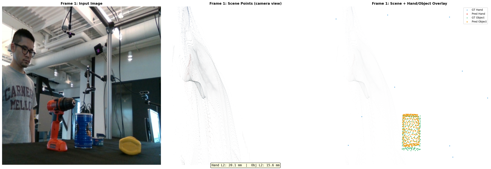
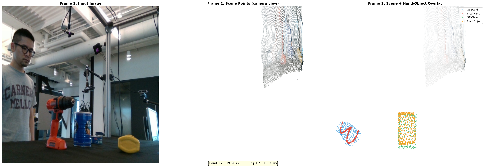
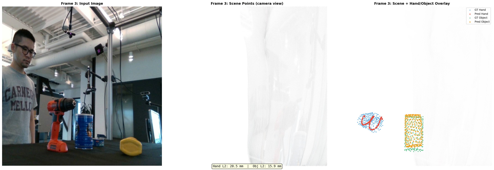
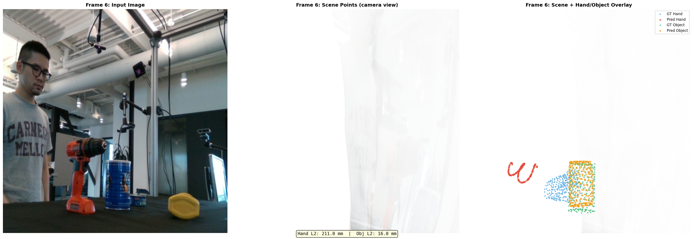

All 4 training frames: Input | Scene RGB points | Hand+Object overlay. Hand (red/blue) and object (orange/green) predictions align well with GT after 500 steps of overfit.
Single-sequence overfit on 4 training frames using Fourier positional encoding + FPS point sampling. Validates that the DCF pipeline can fit a sequence before testing generalization.
| Metric | Initial | Final (step 500) | Reduction |
|---|---|---|---|
| Hand L1 | 0.369 | 0.011 | 34x |
| Object L1 | 0.350 | 0.007 | 50x |
| Frame | Hand L2 (mm) | Object L2 (mm) |
|---|---|---|
| 0 | 20.3 | 12.5 |
| 1 | 20.3 | 12.4 |
| 2 | 21.8 | 12.6 |
| 3 | 21.6 | 12.8 |
| Avg | 21.0 | 12.6 |
All 4 training frames: Input | Scene RGB points | Hand+Object overlay. Hand (red/blue) and object (orange/green) predictions align well with GT after 500 steps of overfit.

Frame 0 — Hand L2: 20.3mm, Obj L2: 12.5mm

Frame 1 — Hand L2: 20.3mm, Obj L2: 12.4mm

Frame 2 — Hand L2: 21.8mm, Obj L2: 12.6mm

Frame 3 — Hand L2: 21.6mm, Obj L2: 12.8mm
Trained on frames 0, 5, 10, 15 (no contact). Evaluated on held-out frames 20, 25, 30, 35 (increasing contact density).
| Frame | Split | Hand L2 (mm) | Object L2 (mm) | Contact Points |
|---|---|---|---|---|
| 0 | TRAIN | 20.1 | 15.6 | 0 |
| 5 | TRAIN | 20.1 | 15.6 | 0 |
| 10 | TRAIN | 19.9 | 16.3 | 0 |
| 15 | TRAIN | 20.5 | 15.9 | 0 |
| 20 | TEST | 115.8 | 15.6 | 0 |
| 25 | TEST | 189.5 | 16.0 | 8 |
| 30 | TEST | 211.0 | 16.0 | 58 |
| 35 | TEST | 221.8 | 18.0 | 82 |
| Branch | Train avg | Test avg | Gap |
|---|---|---|---|
| Hand L2 | 20.2 mm | 184.5 mm | +164.3 mm |
| Object L2 | 15.9 mm | 16.4 mm | +0.5 mm |

All 8 frames: 4 train (green background) + 4 test frames. Object predictions remain accurate across all frames; hand predictions collapse on unseen test frames.
Frame 0 TRAIN — Hand: 20.1mm, Obj: 15.6mm, Contacts: 0

Frame 5 TRAIN — Hand: 20.1mm, Obj: 15.6mm, Contacts: 0

Frame 10 TRAIN — Hand: 19.9mm, Obj: 16.3mm, Contacts: 0

Frame 15 TRAIN — Hand: 20.5mm, Obj: 15.9mm, Contacts: 0

Frame 20 TEST — Hand: 115.8mm, Obj: 15.6mm, Contacts: 0
Frame 25 TEST — Hand: 189.5mm, Obj: 16.0mm, Contacts: 8

Frame 30 TEST — Hand: 211.0mm, Obj: 16.0mm, Contacts: 58
Frame 35 TEST — Hand: 221.8mm, Obj: 18.0mm, Contacts: 82
FINDING Object trajectory generalizes perfectly — the canonical-to-posed rigid SE(3) transform is learned correctly from canonical point encoding alone. The 0.5mm test gap is negligible.
FINDING Hand trajectory memorizes — the model ignores image features for hand prediction. 500 overfit steps on 4 no-contact training frames causes it to collapse to a constant hand position rather than learning image-conditioned prediction.
FINDING Test hand error scales with frame distance from training frames. Frame 20 (nearest) = 116mm; Frame 35 (farthest) = 222mm. The model's hand prediction degrades monotonically.
FINDING Contact density correlates with hand error on test frames — frames 20–35 have 0, 8, 58, 82 contact points respectively. The hand is reaching toward the object in unseen frames, which requires genuine image-conditioned generalization the current model cannot do.
| Branch | Why it works / fails | Fix |
|---|---|---|
| Object | SE(3) rigid transform from canonical points is consistent across all frames — no image conditioning needed | Already working. Keep current architecture. |
| Hand | Articulated deformation varies frame to frame. 4-frame overfit provides a low-loss shortcut: memorize 4 positions. Image features get ignored. | Train on more frames & sequences; enforce image-conditioned loss; hand-specific cross-attention. |
| Priority | Task | Rationale |
|---|---|---|
| P0 | Train on more frames / full sequence (not just 4) | Prevent memorization shortcut; force image conditioning |
| P0 | Increase hand-specific loss weight | Currently object and hand loss are equal; hand needs more pressure |
| P1 | Add hand-specific cross-attention to image tokens | Force the hand branch to attend to relevant image regions |
| P1 | Contact-rich overfit experiment (acp_dcf_contact_overfit_500) | Test whether contact supervision improves hand generalization |
| P2 | NLF query overfit (exp_nlf_query_overfit_500) | Neural Latent Fields approach as alternative hand representation |
Published 2026-04-14 · Branch: feat/dcf · Logs: acp_dcf_overfit_500, acp_dcf_generalization_500